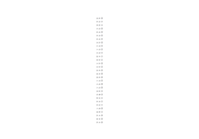
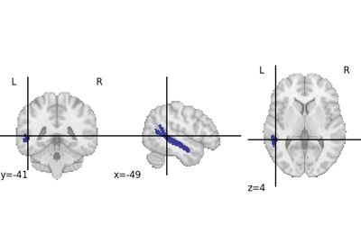
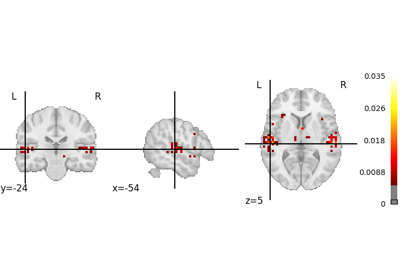

Examples of the NeuroLang language environment.¶
Examples

Loading and Querying the Destrieux et al. Atlas’ Left Hemisphere
Loading and Querying the Destrieux et al. Atlas' Left Hemisphere

Datalog Intermediate Representation Example based on the Destrieux Atlas
Datalog Intermediate Representation Example based on the Destrieux Atlas

NeuroLang Example based Implementing a NeuroSynth Query
NeuroLang Example based Implementing a NeuroSynth Query
Example where a spatial prior is defined based on the distance between voxels and foci in a coordinate-based meta-analysis database